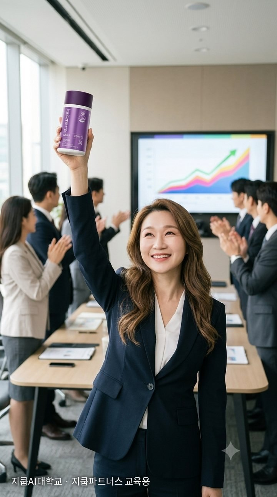

제품 프롬프트북AI로사쌤 · 2권 13번
← 뒤로 가기
지쿱AI대학교 · 지쿱파트너스 교육용 프롬프트
회의실을 뒤집은 발표
사람 + 제품 · 코믹 · 실사. 인물 사진 한 장과 제품 사진 한 장만 올리면 이미지와 10초 영상을 각각 만들 수 있어요. 어떤 제품이든 쓸 수 있어요.
이미지광고 이미지 만들기

인물 사진 한 장과 제품 사진 한 장을 먼저 올리고, 아래 프롬프트를 붙여넣으세요.
세로 9:16 이미지 한 장. 스타일: 실사.
인물: 업로드된 인물 이미지에서는 얼굴만 가져온다. 얼굴 생김새, 나이대, 성별, 체형은 같은 사람으로 유지한다. 업로드 사진 속 옷, 머리 모양, 자세, 표정, 배경은 따라 하지 않는다. 이 장면의 옷차림: 비즈니스 정장. 머리 모양도 이 장면과 옷차림에 어울리게 새로 손질한다. 자세와 표정은 아래 장면 설명을 따른다.
제품: 업로드된 제품 이미지에 찍힌 것 전부가 한 세트다. 포장 상자와 내용물(스틱, 병, 튜브, 용기, 캡슐 판 등)이 함께 찍혀 있으면 이 글의 '제품'은 그 둘을 합친 한 세트를 뜻하며, 상자만 또는 내용물만 나오면 안 된다. 한 가지만 찍혀 있으면 그것만 나온다. 놓여 있는 장면에서는 업로드 이미지와 같은 배치로 상자와 내용물이 나란히 붙어 함께 놓인다. 들거나 옮기는 장면에서는 상자와 내용물을 함께 들거나 받침째 함께 옮기고 둘 다 앞면이 보인다. 제품은 업로드 이미지에 보이는 방향 그대로다. 서 있는 것은 서 있는 그대로이며, 장면 설명이 어떻든 눕히거나 기울이거나 돌리거나 뒤집지 않는다. 세트의 구성과 개수를 빼거나 더하지 않는다. 형태, 색상, 비율, 상자와 내용물의 크기 차이는 처음부터 끝까지 변하지 않는다. 제품 겉면은 업로드 이미지를 사진 그대로 옮긴 것처럼 보인다. 인쇄된 브랜드명, 라벨, 글자의 내용, 언어, 글씨체, 크기, 줄 배열, 위치를 똑같이 유지한다. 세로로 쓰인 글자는 세로 그대로, 한글은 한글 그대로 두고 영어로 바꾸지 않는다. 글자를 다시 디자인하거나 가로로 고쳐 쓰거나 지우거나 새로 지어내지 않는다. 작아서 그리기 어려운 글자도 다른 글자로 바꾸지 않는다. 무늬나 그림을 더하지 않는다. 브랜드가 있는 앞면이 카메라를 향하고, 글자가 읽힐 만큼 크고 또렷하게 보이며 흐려지거나 뭉개지지 않는다. 제품은 열리거나 찌그러지거나 늘어나지 않는다. 캐릭터, 사람, 소품은 제품 앞을 가리지 않고 제품 옆이나 뒤에 서며, 제품 전체가 화면 안에 잘리지 않고 들어온다. 제품 겉에는 물방울, 눈, 흙, 먼지, 거품이 묻지 않는다. 업로드 이미지의 흰 배경과 바닥에 비친 그림자는 가져오지 않는다. 제품은 사람 손에 들기 알맞은 실제 크기로 보인다.
배경: 회의실. 뒤 화면에는 글자 없는 그래프 그림. 동료들은 뒷모습으로 흐릿하다.
장면: 정장 차림의 인물이 회의실 앞에서 제품을 번쩍 들고 있고 동료들이 일어나 박수를 친다.
화면: 제품과 주인공에 또렷한 초점, 먼 배경만 흐리게. 밝고 깨끗한 조명. 제품이 화면에서 충분히 크게 보이고 라벨이 읽힐 만큼 선명하게.
금지: 자막, 글자, 로고, 워터마크를 새로 넣지 않는다. 배경의 간판, 포장, 책, 화면에도 글자를 넣지 않는다. 제품에 원래 있는 글자만 보인다.
영상 · 10초 · 한국어 대사 한마디광고 영상 만들기
이미지를 먼저 만들 필요가 없어요. 영상 도구에 인물 사진 한 장과 제품 사진 한 장을 올리고, 아래 프롬프트를 붙여넣으세요.
10초 세로 9:16 영상. 스타일: 실사.
인물: 업로드된 인물 이미지에서는 얼굴만 가져온다. 얼굴 생김새, 나이대, 성별, 체형은 같은 사람으로 유지한다. 업로드 사진 속 옷, 머리 모양, 자세, 표정, 배경은 따라 하지 않는다. 이 장면의 옷차림: 비즈니스 정장. 머리 모양도 이 장면과 옷차림에 어울리게 새로 손질한다. 자세와 표정은 아래 장면 설명을 따른다.
제품: 업로드된 제품 이미지에 찍힌 것 전부가 한 세트다. 포장 상자와 내용물(스틱, 병, 튜브, 용기, 캡슐 판 등)이 함께 찍혀 있으면 이 글의 '제품'은 그 둘을 합친 한 세트를 뜻하며, 상자만 또는 내용물만 나오면 안 된다. 한 가지만 찍혀 있으면 그것만 나온다. 놓여 있는 장면에서는 업로드 이미지와 같은 배치로 상자와 내용물이 나란히 붙어 함께 놓인다. 들거나 옮기는 장면에서는 상자와 내용물을 함께 들거나 받침째 함께 옮기고 둘 다 앞면이 보인다. 제품은 업로드 이미지에 보이는 방향 그대로다. 서 있는 것은 서 있는 그대로이며, 장면 설명이 어떻든 눕히거나 기울이거나 돌리거나 뒤집지 않는다. 세트의 구성과 개수를 빼거나 더하지 않는다. 형태, 색상, 비율, 상자와 내용물의 크기 차이는 처음부터 끝까지 변하지 않는다. 제품 겉면은 업로드 이미지를 사진 그대로 옮긴 것처럼 보인다. 인쇄된 브랜드명, 라벨, 글자의 내용, 언어, 글씨체, 크기, 줄 배열, 위치를 똑같이 유지한다. 세로로 쓰인 글자는 세로 그대로, 한글은 한글 그대로 두고 영어로 바꾸지 않는다. 글자를 다시 디자인하거나 가로로 고쳐 쓰거나 지우거나 새로 지어내지 않는다. 작아서 그리기 어려운 글자도 다른 글자로 바꾸지 않는다. 무늬나 그림을 더하지 않는다. 브랜드가 있는 앞면이 카메라를 향하고, 글자가 읽힐 만큼 크고 또렷하게 보이며 흐려지거나 뭉개지지 않는다. 제품은 열리거나 찌그러지거나 늘어나지 않는다. 캐릭터, 사람, 소품은 제품 앞을 가리지 않고 제품 옆이나 뒤에 서며, 제품 전체가 화면 안에 잘리지 않고 들어온다. 제품 겉에는 물방울, 눈, 흙, 먼지, 거품이 묻지 않는다. 업로드 이미지의 흰 배경과 바닥에 비친 그림자는 가져오지 않는다. 제품은 사람 손에 들기 알맞은 실제 크기로 보인다.
배경: 회의실. 뒤 화면에는 글자 없는 그래프 그림. 동료들은 뒷모습으로 흐릿하다.
장면
0~3초: 인물이 지시봉으로 그래프를 가리키며 지루하게 발표한다. 동료들이 존다.
3~7초: 인물이 지시봉을 내려놓고 제품을 탁 꺼내 든다. 동료들이 번쩍 깬다.
7~10초: 동료들이 일어나 박수를 치고 인물이 제품 앞면을 카메라로 향한다. 카메라가 제품에서 멈춘다.
화면: 제품과 주인공은 항상 또렷한 초점, 먼 배경만 흐리게. 밝고 깨끗한 조명, 부드러운 카메라 움직임. 제품 라벨은 10초 내내 선명하다. 제품은 화면에서 작아지지 않게 충분히 크게 잡는다. 마지막 2초는 카메라가 제품 정면으로 다가가 제품이 화면의 절반 가까이 차지하게 멈춘다.
소리: 인물이 한국어로 또렷하고 힘 있게 말한다. 대사는 "결론은, 이겁니다." 이 한마디뿐이다. 한국어 외 다른 언어 금지. 목소리는 인물의 성별과 나이에 어울리게. 내레이션 없음. 장면에 맞는 효과음과 잔잔한 배경음악.
금지: 화면에 자막, 글자, 로고를 새로 넣지 않는다. 배경의 간판, 포장, 책, 화면에도 글자를 넣지 않는다. 대사가 있어도 자막은 넣지 않는다. 제품을 먹거나 여는 장면 없음.
← 프롬프트북 전체 보기
지쿱AI대학교 · 지쿱파트너스 교육용 프롬프트
출처 · AI로사쌤 · 무단 복제와 재배포를 금합니다